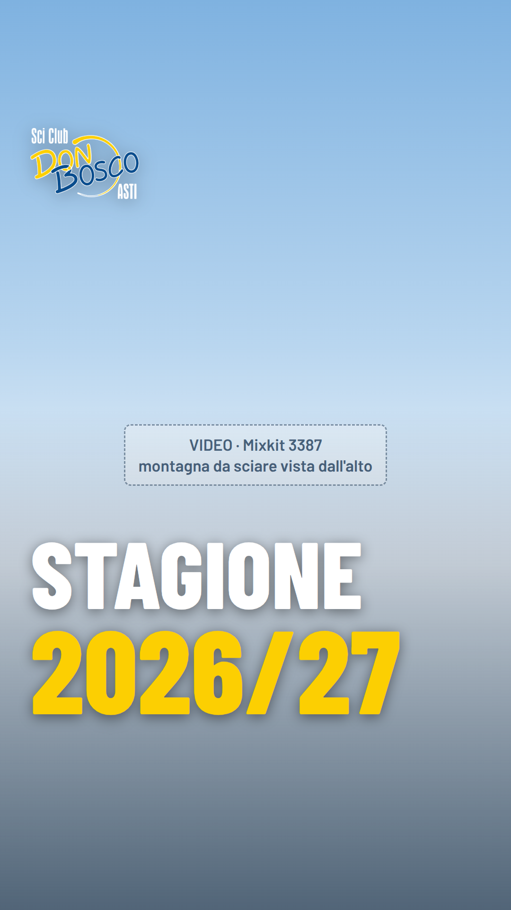
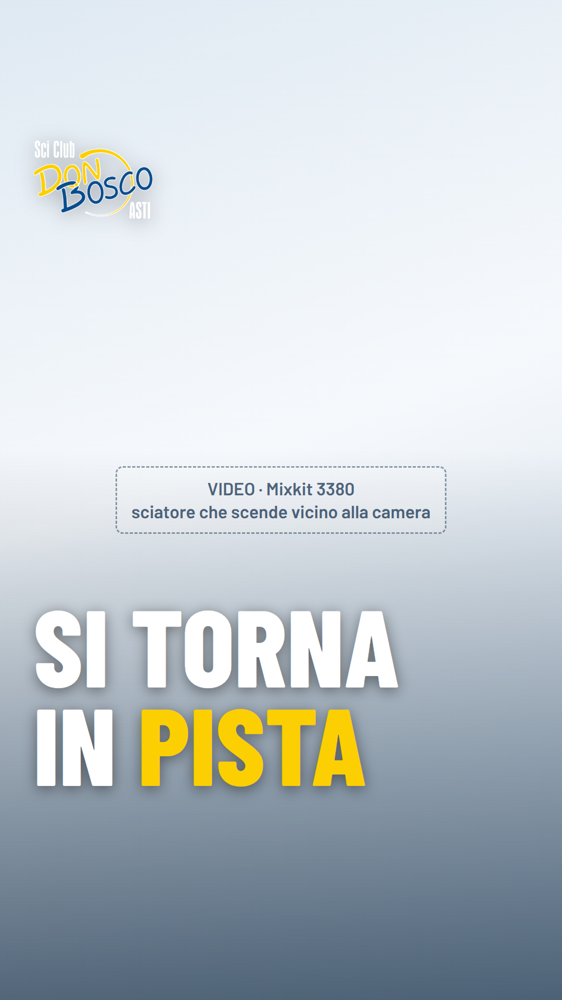
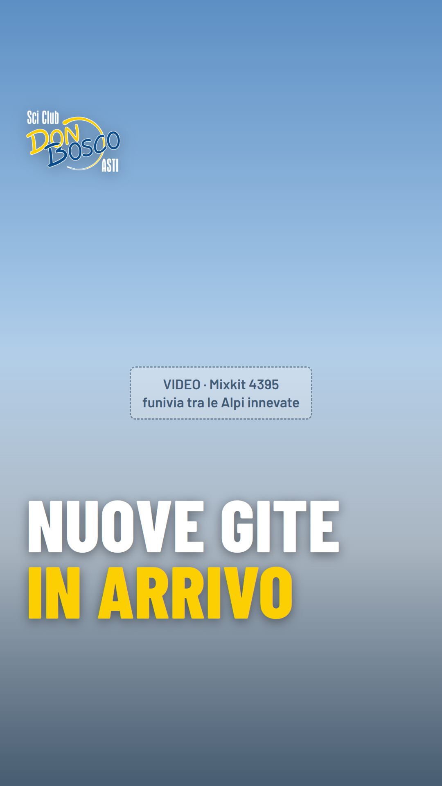
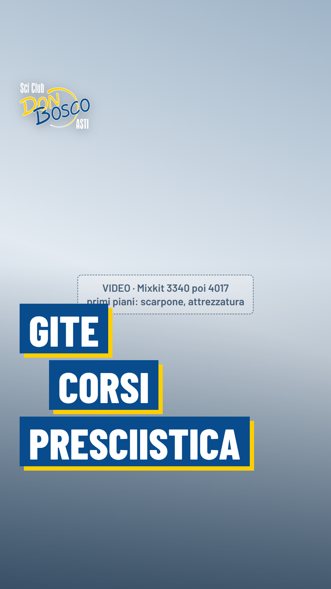
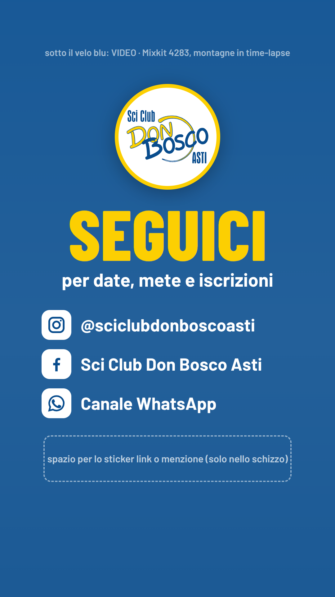

15 secondi, 1080×1920, video muto. Fotogrammi statici: niente movimento, e al posto dei video ci sono riquadri segnaposto con il numero della clip Mixkit.

Montagna vista dall'alto, la camera avanza piano. «STAGIONE» bianco, «2026/27» giallo. Logo fisso in alto a sinistra fino alla scena 4.

Sciatore vicino alla camera. Il testo entra di lato.

Funivia tra le Alpi. Nessun nome di località.

Primi piani di scarpone e attrezzatura. Tre targhe blu con l'ombra gialla, che entrano a cascata.

Montagne in time-lapse sotto il velo blu. Logo tondo, «SEGUICI», i tre social. Il riquadro tratteggiato serve solo nello schizzo: lì metti lo sticker in Instagram.